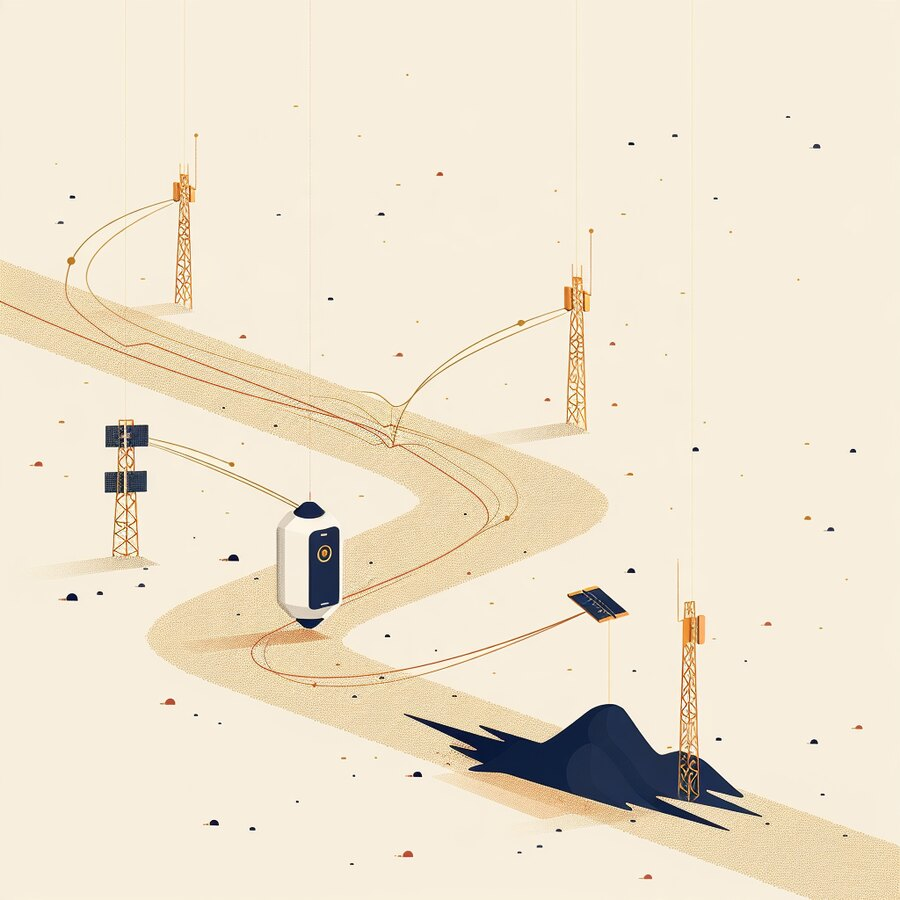
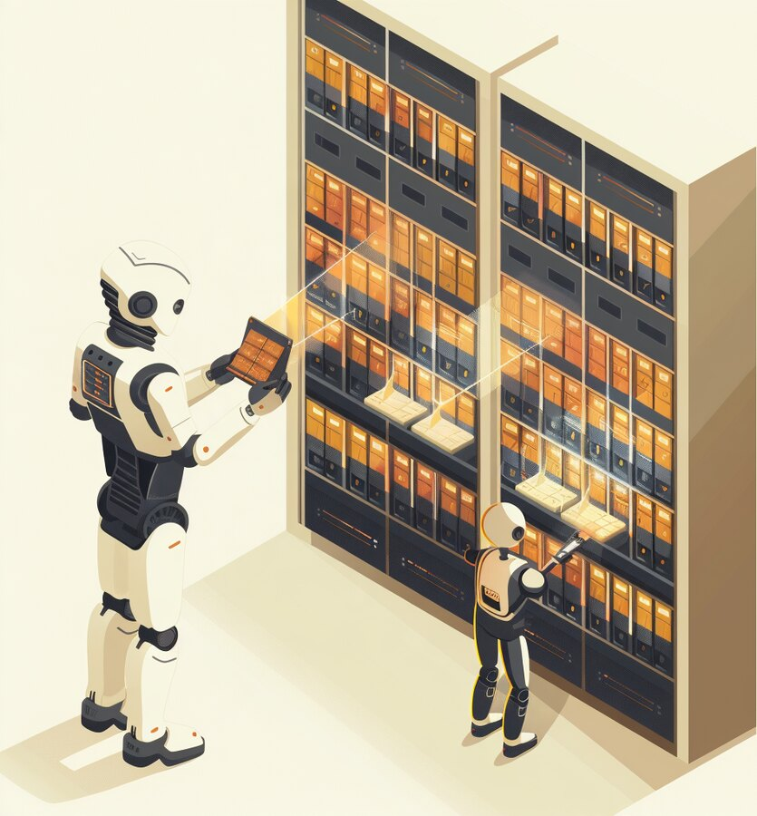
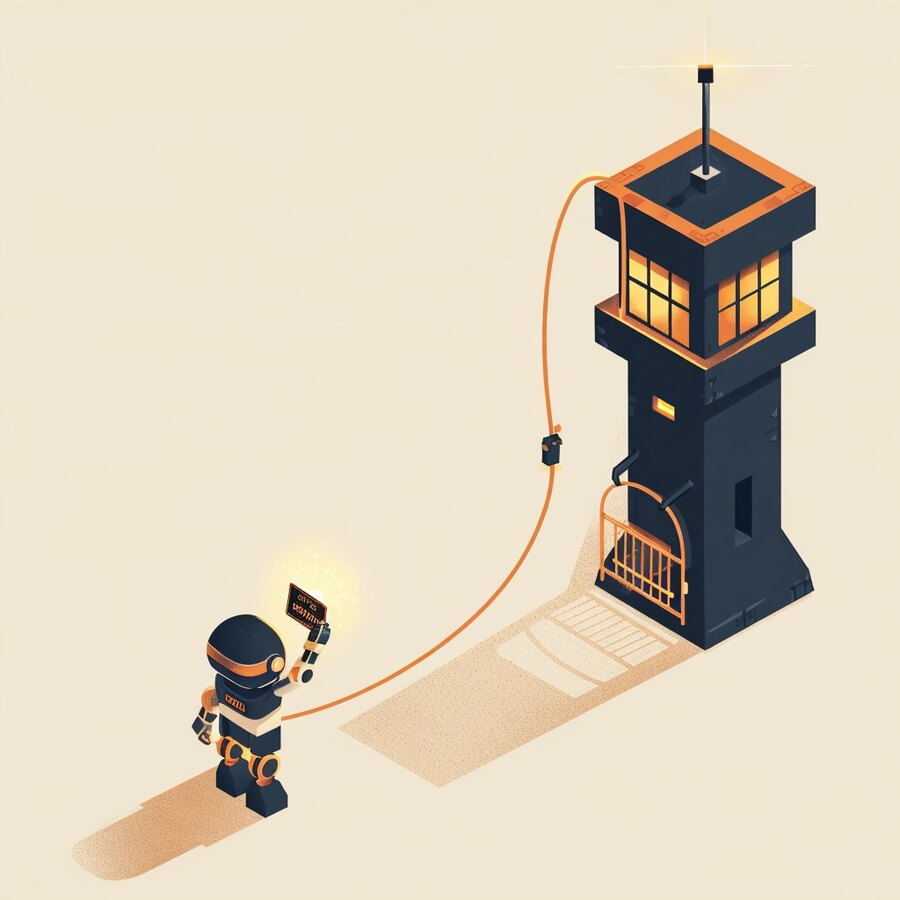
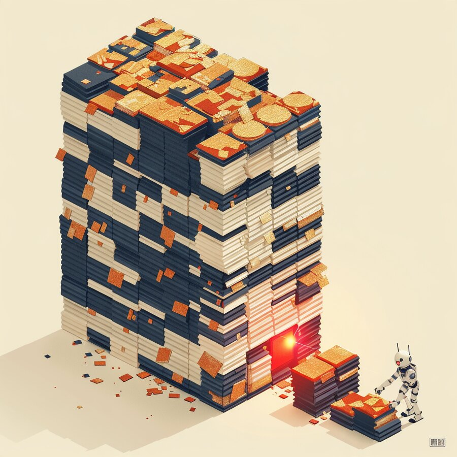

The Signal
| IN THIS ISSUE |
AI & INTELLIGENCE Anthropic opens its doors to outside safety auditors | DATA AI readiness forces a data-governance reckoning | APPLICATIONS ServiceNow gives every AI agent a ‘passport’ | CLOUD The AI data-center trade gets a reality check |
CS
Get it in your inbox
Subscribe free — a new edition weekly |
INFRASTRUCTURE TSMC sets a sixth straight profit record | NETWORK Nokia sells its private-wireless business to Aurelius | IDENTITY & ACCESS A trusted remote-support tool became the way in | CYBERSECURITY A record Patch Tuesday — one flaw already exploited |
The ground is moving under the carriers.

The layer every other technology runs on — the network — is being redrawn under the carriers’ feet, and this week made the shift concrete. On October 15, Verizon and Ericsson completed what they call the world’s first outdoor 6G field call, a pre-standard demonstration in the 7 GHz band from a commercial site in Concord, California. It is a proof of concept, not a product — but it lands in the middle of the most serious reordering of U.S. wireless in a generation. SpaceX’s move to buy nationwide low-band spectrum and turn Starlink Mobile into a full carrier sent AT&T, Verizon and T-Mobile shares reeling, and the three incumbents have since formed a joint venture to standardize satellite direct-to-device coverage. Starlink already serves roughly 12 million subscribers across 205 countries.
For a CEO, this is not a telecom-industry curiosity — it is a question about the ground your business stands on. Everything you have built on top of connectivity — cloud, mobile workforce, IoT, customer apps — assumes the network is a stable utility bought from a short list of carriers. That assumption is now in motion: satellite direct-to-device is turning “no coverage” into a solvable problem, 6G is still years out but will reset performance again, and private 5G is consolidating (see Network). The map of who provides your connectivity, where, and at what resilience is being redrawn.
Our read. Treat connectivity as a strategic sourcing decision, not a line item. Build in diversity — terrestrial plus satellite for anything that cannot go dark, more than one carrier for critical sites, and a plan for direct-to-device as it matures. Watch the spectrum and regulatory moves that will decide pricing and availability. And don’t assume today’s carrier map is permanent: the companies that also own the satellites, the clouds and the devices are reaching for the whole stack, and the pipe your business depends on may soon be theirs.
| 1 AI & INTELLIGENCE | GOVERNANCE · SAFETY |
Independent evaluators get inside access — and the right to publish what they find — a step toward verified, not just promised, AI safety.
On October 15, Anthropic expanded its work with independent evaluators, giving a six-person team from the nonprofit METR what amounts to employee-level access — to internal systems, hardware and offices — to assess the risks and safety practices behind its models. Crucially, METR can publish its findings without Anthropic’s prior approval (Anthropic may request limited redactions for sensitive material). A second nonprofit, SecureBio, is reviewing the chemical- and biological-weapons section of the company’s August 2026 risk report. It is one of the first times a frontier lab has let outsiders inspect its safety work this deeply.
Our read. This is what AI governance maturing looks like: moving from “trust our safety claims” to independent verification you can read. For buyers, the lesson is to demand the same from any AI vendor you build on — third-party evaluations, published results, and a clear account of what the model will and won’t do. “We take safety seriously” is marketing; an outside auditor who can publish without permission is evidence. Make verifiable safety a procurement criterion, not a leap of faith. (Anthropic is a CyberSainya partner.)
| 2 DATA | AI-READY DATA · GOVERNANCE |
The scramble to put agents on enterprise data is exposing how little of it is governed — and making data stewardship a board-level job.
The quiet theme of the week in data was a reckoning: you cannot safely point AI agents at enterprise data that nobody governs. Industry analysts (Constellation Research, IDC, ISG and others) described AI driving a “data-governance renaissance,” and vendors leaned in — Actian, for one, rolled out an AI Analyst and a Steward Agent built around semantic modeling and consistent business logic, pitching “trusted, AI-ready data” as the prerequisite for agentic AI. The common message across the field: semantics, data quality, lineage and stewardship are no longer back-office hygiene but the thing that decides whether your AI works at all.
Our read. Most organizations can buy a model in an afternoon and still can’t trust what their own data means across systems. That gap — not model choice — is why agents hallucinate on internal data and why pilots stall. Invest now in the unglamorous layer: a governed semantic definition of your key entities, measured data quality, tracked lineage, and clear ownership of each domain. Treat data stewardship as a leadership role with a budget. The firms that win with agents are the ones whose data was governed before the agents arrived.

| 3 APPLICATIONS | ENTERPRISE APPS · AGENT CONTROL |
ServiceNow’s ‘AI Passport’ gives every agent a runtime credential — enforcing what it may do while it runs, not just logging it afterward.
ServiceNow introduced AI Passport, a control layer that issues every AI agent its own credential and checks it at runtime to confirm each action is authorized — and can redirect, restrict or shut down an agent that strays outside its scope. The pitch is prevention, not forensics: unlike an audit log, which tells you what an agent already did, a passport governs what it is allowed to do before it acts. Passports are issued through ServiceNow’s control tower and grounded in the company’s live business context (its CMDB and governance policies); for third-party agents, it creates a verifiable permission record rather than trusting the agent’s own claims. NVIDIA is a launch partner; general availability is slated for the fourth quarter.
Our read. As agents move into the applications you already run — ITSM, HR, finance — “what is this agent permitted to do, right now, in this system?” becomes the central control question, and audit logs alone won’t answer it. Favor platforms that enforce agent permissions at runtime, scope each agent to least privilege, and can stop one mid-action. Require human approval for high-impact steps, and demand verifiable permissions for any third-party agent you let touch your systems. An agent you can only review after the fact is an agent you don’t really control.

| 4 CLOUD | AI CAPEX · MARKETS |
Dell fell nearly 12% in a day, leading a data-center selloff — a repricing of AI-infrastructure stocks, not a drop in demand.
Dell shares fell about 11.6% on October 14 to close near $508 after Barclays cut the stock to Equal Weight and trimmed its target, citing valuation after a 300%-plus run in 2026 and the risk that growth slows as memory prices normalize. The move led a broad data-center selloff — HPE, Super Micro and NetApp dropped, Oracle fell about 9% and CoreWeave around 15%, with roughly $80 billion in sector value erased in a day — amplified by a hot inflation print that lifted rate fears. Notably, it wasn’t about weak demand: Dell is sitting on a record $95 billion AI-server backlog. The worry was price and timing, not orders.
Our read. Separate two things the market just conflated: AI demand, which remains very real, and AI-infrastructure valuations, which are volatile and now being re-rated. For a buyer, a supplier’s stock swoon is not a reason to change your roadmap — but the episode is a reminder to stress-test the economics under your AI plans: model what happens if memory and component prices rise, if capacity slips, or if a stretched supplier pulls back. Buy on capability and delivery, keep commitments portable, and don’t let a stock narrative — up or down — set your procurement.
| 5 INFRASTRUCTURE & HYBRID CLOUD | SILICON · EARNINGS |
TSMC posted its sixth straight record quarter — the healthy, and highly concentrated, foundation under every AI plan.
Taiwan Semiconductor (TSMC) reported record third-quarter results on October 15: net income of about NT$763 billion (roughly $23.9 billion), up 68.7% year over year, on revenue of NT$1.49 trillion, up 50.9% — its sixth consecutive record quarter, beating estimates. Gross margin was a rich 66.4%, and high-performance computing (the AI and data-center chips) made up about 68% of sales. The one note of caution: shares slipped after the print on worries about margins and the scale of planned capital spending, even as management kept describing AI demand as robust.
Our read. The foundation under the entire AI build-out is, by the numbers, healthy — and that is exactly why its concentration is the risk worth watching. Nearly every advanced chip your cloud and AI vendors depend on is made by this one company, and its record quarter underwrites every layer above it, from the data-center stocks that wobbled this week (see Cloud) to the agents you’re piloting. Keep treating supply concentration as a board-level exposure: design flexibility across chips and clouds where you can, and watch TSMC’s capacity and guidance as a leading indicator for your own AI costs and timelines.
| 6 NETWORK & CONNECTIVITY | PRIVATE 5G · M&A |
Nokia is divesting its private-5G and industrial-edge unit to a private-equity firm — a sign the enterprise-network market is consolidating.
Nokia agreed to sell its Enterprise Campus Edge business — its private wireless and industrial-edge unit, serving close to 900 customers across manufacturing, logistics, energy and the public sector — to private-equity firm Aurelius. The price wasn’t disclosed; the deal is expected to close in the first half of 2027. Nokia framed it as streamlining its portfolio to focus capital on its highest-value areas, while Aurelius plans to run the business standalone and expand it into AI-driven industrial automation. For the roughly 900 organizations that run private 5G from Nokia, the vendor behind a piece of their operational network just changed hands.
Our read. Private 5G and the industrial edge are real and growing — and now consolidating, which is a mixed signal for buyers. A focused owner may invest and move faster; a private-equity owner may also reprice, restructure or resell. If you run (or are planning) a private network for a factory, port, campus or site, treat the vendor as you would any critical supplier: confirm roadmap and support commitments through the ownership change, check renewal terms, and keep enough standards-based portability that you’re not stranded if the strategy shifts. Operational networks are infrastructure you can’t afford to have drift.
| 7 IDENTITY & ACCESS | PRIVILEGED ACCESS · ZERO-DAY |
A BeyondTrust zero-day let a state-linked group reach root and harvest every credential the tool brokered — the trusted door, abused again.
BeyondTrust disclosed a critical zero-day in its Remote Support product — CVE-2026-102764, scored 9.3 on the CVSS v4 scale — that a suspected China-linked espionage group, tracked as Armory Castle (formerly UNC5221), had been exploiting since August 29. Google and Mandiant say the attacker gained root access, tried to harvest stored credentials, and pivoted to downstream systems; an unauthenticated attacker could reach host-level control and every credential the appliance stores or brokers. All versions through 26.2.3 are affected. SaaS customers were patched by October 9; self-hosted appliances must update themselves, and Shadowserver counted more than 1,400 instances exposed online. The Canadian Cyber Centre issued an alert on October 16.
Our read. Remote-support and privileged-access tools are among the most dangerous things on your network precisely because you trust them: they hold or broker the keys to everything else. Treat them as crown-jewel identity infrastructure. Patch this class of product on the shortest clock you can run, rotate any credentials the appliance brokered after a fix, put the management interfaces behind strict network controls rather than open to the internet, and watch them for abnormal use. The breach that hurts most is rarely a new door — it’s the trusted one you already installed.
| 8 CYBERSECURITY | PATCH MANAGEMENT · ZERO-DAY |
Microsoft fixed more than 1,400 vulnerabilities at once, including a Windows flaw attackers are already exploiting.
Microsoft’s October 13 Patch Tuesday was the largest on record — more than 1,400 vulnerabilities fixed in a single release (BleepingComputer counts 1,411; CrowdStrike, 1,413), far above September’s prior high near 974 — including three zero-days. The urgent one is CVE-2026-96951, a Windows Shell command-injection flaw (CVSS 8.8) that bypasses the “Mark of the Web” protection Windows applies to downloaded files and can be triggered through a malicious email or message. Microsoft confirmed it is already being exploited, and CISA ordered federal agencies to patch it by October 16. The release also fixed five Outlook remote-code-execution bugs rated 9.8.
Our read. A release this big is itself the risk — you cannot test and deploy 1,400 fixes at once, so prioritize ruthlessly. Patch the exploited flaw first (the Windows Shell Mark-of-the-Web bypass), then the critical remote-code-execution bugs on anything internet-facing, then the rest on a sane schedule. Rank by two questions — is it being exploited, and is the affected system exposed? — not by raw CVE count. And treat the record volume as the real signal: patch triage is now a continuous, prioritized operation, not a monthly box-tick.

| THE THROUGH-LINE | ACROSS ALL EIGHT LAYERS |
| IN MARKET | NEW PRODUCTS THIS WEEK |
| ON THE RADAR | EVENTS & CONFERENCES |
| ABOUT CYBERSAINYA | DIGITAL TRANSFORMATION PARTNER |
CyberSainya is a digital transformation partner. We help organizations turn IT, security, and AI from sources of risk into engines of growth — complexity made simple. That means clear strategy, the right technology, and a partner who stays in the room long after the decision is made: advisory and consulting, security and IT assessments, executive workshops, and hands-on execution. Through our AI products division, CernoGlobus, we build practical, security-by-design AI that puts enterprise-grade protection behind everyday automation.